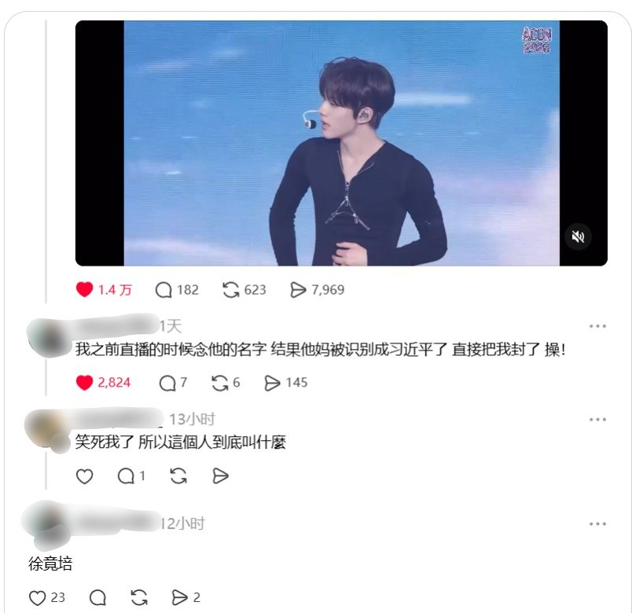
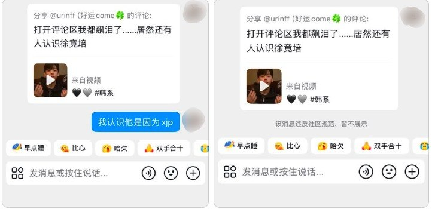

仅此而已的故事🎵
@LeeYooSun_
笑死我了


李老师不是你老师
@whyyoutouzhele
“徐竟培”不是“习近平”
一名艺人在视频中自我介绍时说出自己的名字“徐竟培”，发音听起来很像“习近平”。
有网友在相关娱乐视频评论区称，自己此前直播时念到这个名字，结果被平台识别成“习近平”，账号直接被封。
另有网友私信“我认识他是因为xjp”后，这条消息被提示“违反社区规范，暂不展示”。 https://t.co/weog6dHOlV